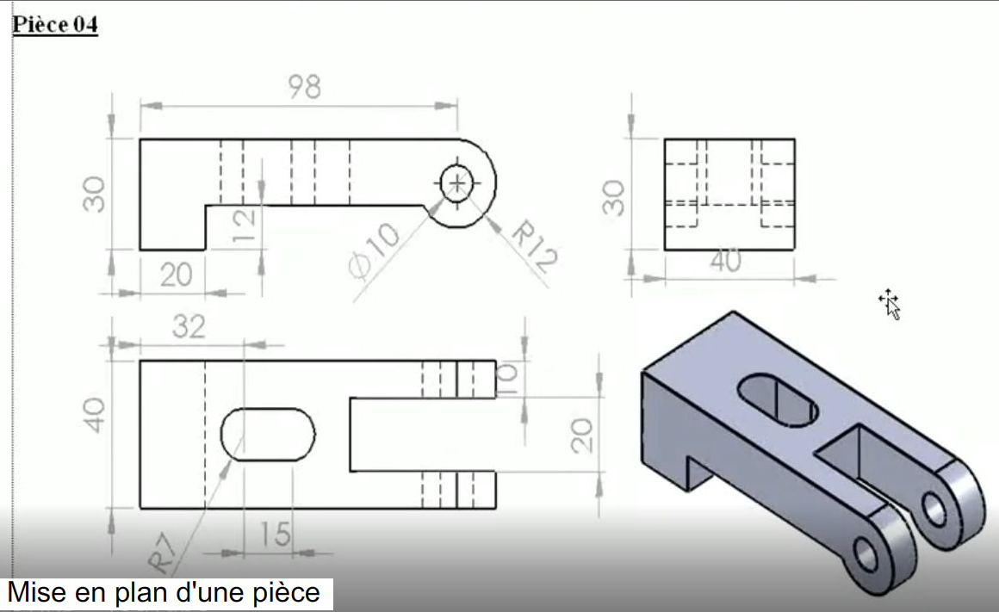

Accueil · Étape 2 sur 6
Étape 2
Mise en plan et cotation
Cette étape prépare la station : les cotes de l'iPod décident de la forme de l'appui.
Outil Fiche Outils Solidworks · dossier fiches outils / Fiche outils SW

Niveau
À faire, pas à pas
- Ouvrir la pièce de l'iPod modélisée à l'étape 1. Au besoin, regarder la vidéo « Mise en plan et DXF » de l'aide, plus bas sur cette page.
- Créer un nouveau dessin (mise en plan) et choisir le format de feuille.
- Insérer la vue de face, puis les vues de dessus et de gauche : ce sont les 3 vues standards.
- Ajouter les cotes, en commençant par la longueur, la largeur et l'épaisseur.
- Repérer et coter ce qui servira à la station d'accueil (voir le cahier des charges).
- Faire contrôler votre travail et compléter le dossier à rendre.
Dans le dossier
Page 3Représentation 2D en 3 vues standards, cotée
Évalué sur
Croquis de l'iPod, DAO et mise en plan-cotation2 pts
À faire
- Réaliser sous SW la mise en plan de l'iPod : représentation 2D avec 3 vues standards.
- Noter sur la représentation 2D les cotations importantes pour la réalisation de la station d'accueil (voir le cahier des charges).
- Faire contrôler votre travail et compléter le dossier à rendre.
Dans le dossier
Page 3Représentation 2D en 3 vues standards, cotée
Évalué sur
Croquis de l'iPod, DAO et mise en plan-cotation2 pts
Objectif
- Produire la représentation 2D de l'iPod en 3 vues standards, cotée de façon à pouvoir concevoir la station. Faire contrôler votre travail.
Dans le dossier
Page 3Représentation 2D en 3 vues standards, cotée
Évalué sur
Croquis de l'iPod, DAO et mise en plan-cotation2 pts
À compléter dans le dossier à rendre
Toutes vos productions vont dans un seul fichier : station-ipod-dossier-a-rendre.docx. Rien ne se dépose sur ce site. Les productions de cette étape se placent en page 3.
- Faites le travail demandé, puis faites-le contrôler.
- Insérez chaque production à sa place dans le dossier.
- Ajoutez une légende ou une explication sous chaque image.
- Enregistrez le fichier avant de passer à l'étape suivante.
Page 3 · éléments à insérer
Conseils
- Insérez la mise en plan entière, les trois vues bien lisibles.
- Signalez les cotes utiles à la station et dites en une phrase pourquoi elles comptent.
Aide SolidWorks en vidéo
Six vidéos, du niveau débutant au niveau intermédiaire. Celles à regarder pour cette étape sont en premier.
Niveau